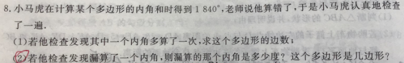

p7 多边形内角和的错算问题
解答
多边形内角和不等式约束整数解
★★★☆

📷 点击查看原图
小马虎在计算某个多边形的内角和时得到 1840∘，老师说他算错了，于是小马虎认真地检查了一遍.
(1) 若他检查发现其中一个内角多算了一次，求这个多边形的边数；
(2) 若他检查发现漏算了一个内角，则漏算的那个内角是多少度？这个多边形是几边形？
📌 知识点总结（点击展开／收起）
📌 知识点总结
| 知识点 | 说明 |
|---|
| 多边形内角和公式 | n 边形的内角和 S=(n−2)×180∘ |
| 内角取值范围 | 多边形的每个内角 0∘<α<180∘（凸多边形） |
| 多算与漏算 | 多算：总和 > 实际和；漏算：总和 < 实际和 |
| 整数约束 | n 必须是正整数，且 α,β 须满足 0∘<⋅<180∘ |
| 不等式夹逼 | 由两个端点不等式确定 n 的取值范围，取唯一整数 |
✍️ 解题过程
第一步：写出内角和公式并设未知数
设该多边形为 n 边形，则内角和为：
S=(n−2)×180∘
设多算的内角为 α，漏算的内角为 β，则由内角的取值范围：
0∘<α<180∘,0∘<β<180∘
第二步：(1) 多算了一个内角的情形
多算一个内角，相当于在正确的内角和之上加上了这个内角，即：
(n−2)×180∘+α=1840∘
解出 α 关于 n 的表达式：
α=1840∘−(n−2)×180∘=1840∘−180∘n+360∘=2200∘−180∘n
由 0∘<α<180∘，得：
0<2200−180n<180
2020<180n<2200
1802020<n<1802200
11.22⋯<n<12.22⋯
唯一满足条件的正整数是 n=12。代入求 α：
α=2200∘−180∘×12=2200∘−2160∘=40∘
✅ (1) 答案：这个多边形是 12 边形，多算的那个内角是 40∘
第三步：(2) 漏算了一个内角的情形
漏算一个内角，相当于正确内角和减去这个内角等于小马虎算出的结果：
(n−2)×180∘−β=1840∘
解出 β 关于 n 的表达式：
β=180∘n−360∘−1840∘=180∘n−2200∘
由 0∘<β<180∘，得：
0<180n−2200<180
2200<180n<2380
1802200<n<1802380
12.22⋯<n<13.22⋯
唯一满足条件的正整数是 n=13。代入求 β：
β=180∘×13−2200∘=2340∘−2200∘=140∘
✅ (2) 答案：漏算的那个内角是 140∘，这个多边形是 13 边形
📚 南昌/江西中考类似题（同类拓展）
题1（基本型·江西中考常见）：一个多边形的内角和是 2340∘，求这个多边形的边数。📄 查看详细解答 →
💡 提示：(n−2)×180=2340。
题2（多算内角）：小明计算一个多边形的内角和时，把其中一个内角多算了一次，结果为 2840∘。求这个多边形的边数及多算的那个内角。📄 查看详细解答 →
💡 提示：设 n 边形，多算的内角为 α，则 (n−2)×180+α=2840，0<α<180。
题3（漏算内角）：小亮计算一个 18 边形的内角和时，漏算了一个内角，结果为 2730∘。求漏算的那个内角。📄 查看详细解答 →
💡 提示：(18−2)×180−β=2730。